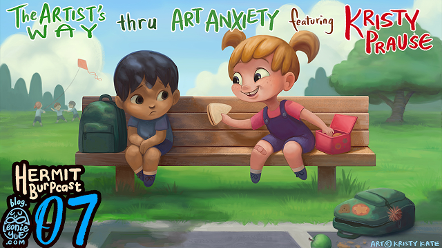

The Artist's Way Through Art Anxiety - My First Interview on Leonie's HermitBurpcast
Hey look, it's my very first podcast interview!

Back in June I had the pleasure of being Leonie Yue's very first guest on her Hermit Burpcast. In this podcast (starting roughly 30mins in) we discuss our own experiences with art anxiety and our thoughts on Julia Cameron's self-help book "The Artist's Way".
If you've been struggling with art anxiety or what's commonly called "Artist's Block", I recommend having a listen. We share some lessons that might just help.
(I'd even say it's worth a listen just to hear us geeking out about Pokemon!)
Enjoy, and I'd love to hear your thoughts on our discussion.
x Kristy Kate